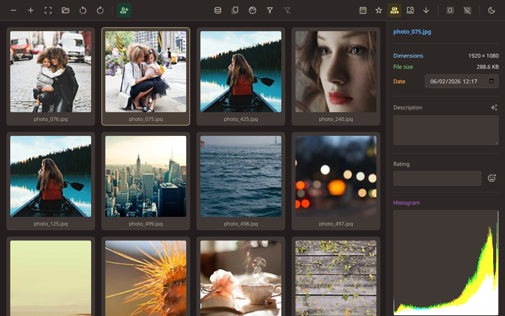
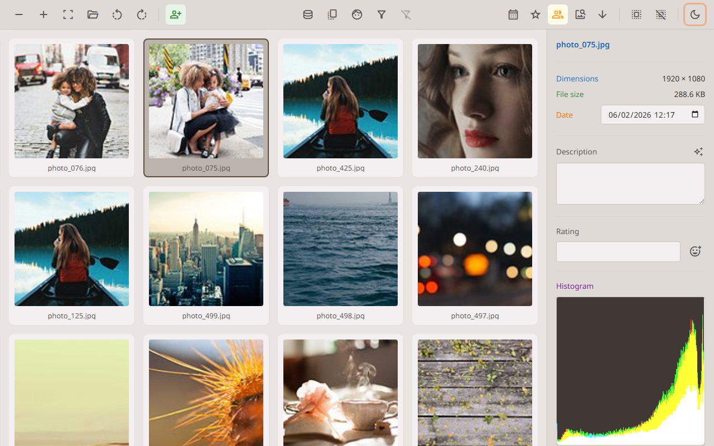
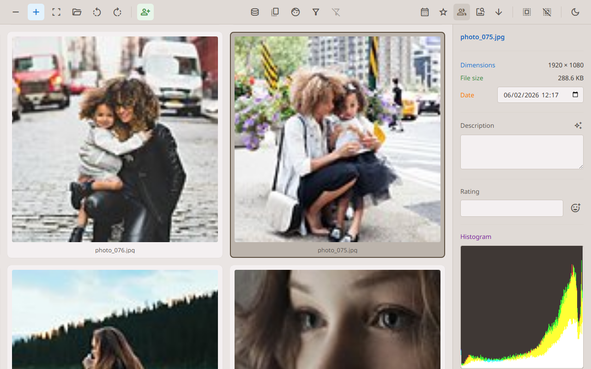
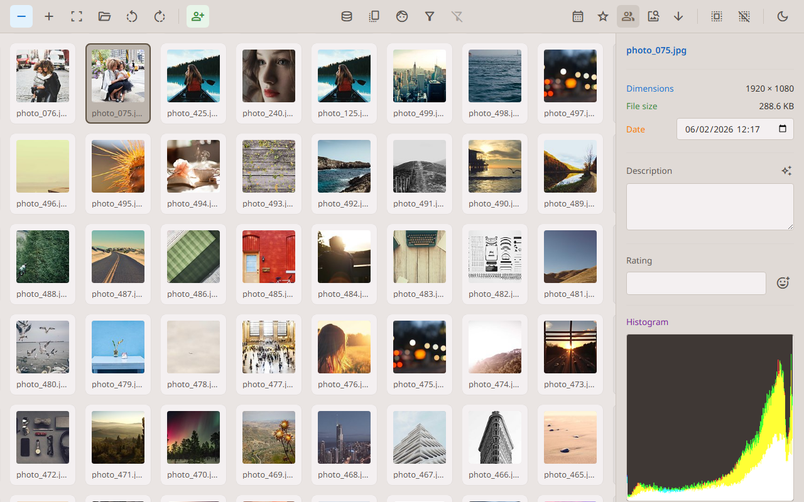

Gallery extras
← Back to contents
7.1. Sorting by people

“Sort by people” groups your photos by who’s in them. Photos of the same person appear together.
7.2. Switching themes

Click the moon/sun icon to switch between light and dark themes.
7.3. Larger thumbnails

Click the “Larger thumbnails” button to make the grid bigger. Each photo shows more detail.
7.4. Smaller thumbnails

Click the “Smaller thumbnails” button to shrink them back down. You can see more photos at once this way.
← Face tagging in full-screen